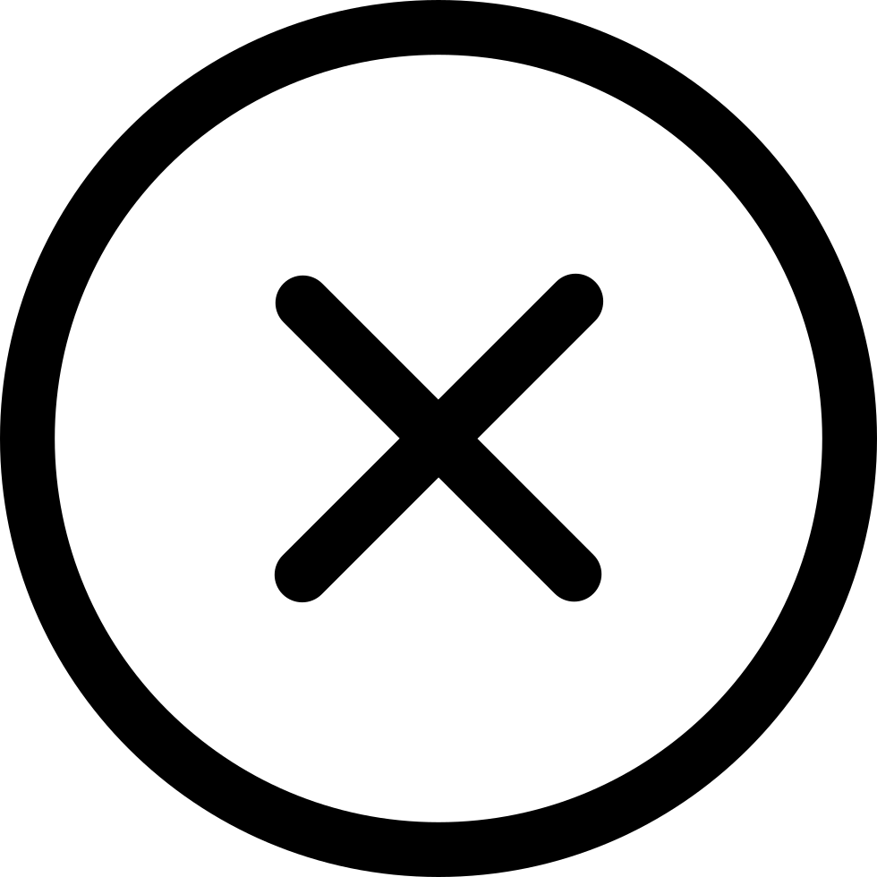

<!-- header.html -->
{% macro zytopbar(username) -%}
    <link href="https://cdn.jsdelivr.net/npm/tailwindcss@2.2.19/dist/tailwind.min.css" rel="stylesheet">
    <style>
        #loading {
            position: fixed;
            top: 0;
            left: 0;
            width: 100%;
            height: 100%;
            z-index: 10000;
            display: flex;
            align-items: center;
            justify-content: center;
            font-size: 24px;
        }

        .fixed-icon {
            /* 样式待添加 */
        }

        .popup {
            display: none;
            position: fixed;
            top: 50%;
            left: 50%;
            transform: translate(-50%, -50%);
            width: 95%;
            height: 85%;
            background-color: #fff;
            border: 2px solid #000;
            padding: 20px;
            z-index: 9999;
        }

        .image-button {
            cursor: pointer;
        }
    </style>

    <div id="loading"></div>

    <div class="fixed-icon">
        <!-- 这里放置你的图标 -->
        <a href="#top"></a>

    </div>

    <nav class="bg-blue-500">
    <div class="container mx-auto flex justify-between items-center">
        <!-- 导航栏商标 -->
        <a class="text-xl text-white font-bold py-4" href="/"></a>
        <!-- 导航入口 -->
        <div class="flex items-center">
            <!-- 导航入口内容 -->
            <a href="/profile">
                
            </a>
            <a class="nav-link" onclick="togglePopup()">
                
            </a>
            <form id="theme-form" method="post" action="/toggle_theme">
                <button type="submit" style="border: none; background-color: transparent; height: 20px">
                    
                </button>
            </form>
        </div>
    </div>
</nav>


    <div id="popup" class="popup">
        <button id="resetBtn" class="btn btn-primary mb-2" onclick="resetIframe()">重置</button>
        
        <iframe src="/search" width="100%" height="100%"></iframe>
    </div>

    <!-- 引入jquery.js的CDN链接 -->
    <script src="https://code.jquery.com/jquery-3.7.1.min.js"></script>
    <!-- 引入popper.js的CDN链接 -->
    <script src="https://cdnjs.cloudflare.com/ajax/libs/popper.js/1.16.1/umd/popper.min.js"></script>

    <script>
        document.addEventListener("DOMContentLoaded", function () {
            var loadingElement = document.getElementById("loading");
            loadingElement.style.display = "none";
        });

        function togglePopup() {
            var popup = document.getElementById("popup");
            if (popup.style.display === "none") {
                popup.style.display = "block";
            } else {
                popup.style.display = "none";
            }
        }

        function resetIframe() {
            var iframe = document.querySelector("iframe");
            iframe.src = iframe.src;
        }

        document.getElementById("theme-form").addEventListener("submit", function (event) {
            event.preventDefault();
            fetch("/toggle_theme", {
                method: "POST"
            })
                .then(function (response) {
                    if (response.ok) {
                        location.reload();
                    }
                });
        });

        document.addEventListener("keydown", function (event) {
            if (event.ctrlKey && event.key === "f") {
                event.preventDefault();
                togglePopup();
            }
        });

        window.addEventListener('contextmenu', function (e) {
            e.preventDefault();
        }, false);
    </script>
{% endmacro %}